什么是MQTT¶
MQTT概述¶
MQTT（Message Queuing Telemetry Transport，消息队列遥测传输协议），是一种基于发布/订阅（publish/subscribe）模式的轻量级通讯协议。该协议构建于TCP/IP协议上，由IBM在1999年发布。MQTT最大优点在于，可以以极少的代码和有限的带宽，为连接远程设备提供实时可靠的消息服务。作为一种低开销、低带宽占用的即时通讯协议，使其在物联网、小型设备、移动应用等方面有较广泛的应用。
MQTT协议设计主要服从以下原则：
- （1）精简，只保留必要的功能；
- （2）采用发布/订阅（Pub/Sub）模式，允许用户动态创建主题；
- （3）考虑低带宽、高延迟、连接不稳定等因素；
- （4）不对客户端计算能力做额外要求；
- （5）提供服务质量管理；
- （6）不对传输数据的类型与格式做额外要求，保持灵活性。
Ref: https://blog.csdn.net/aa1215018028/article/details/84888096
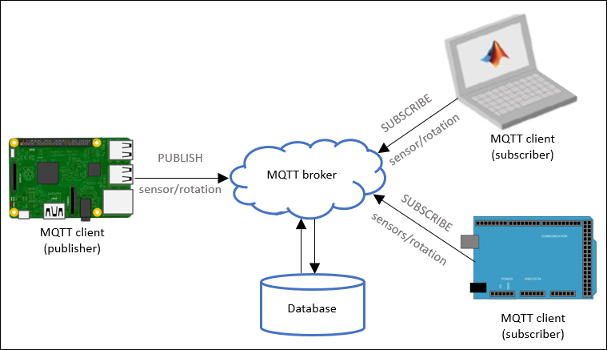
上图展示了MQTT协议的基本架构，可以看到MQTT的基本架构与传统基于客户端/服务器的通信协议类似，也包括作为客户端的MQTT client和作为服务器的MQTT broker两部分。但与传统客户端、服务器之间请求/回答的消息同步模式不同，MQTT采用发布/订阅的模式，从而解耦了消息发布者（Publisher）和消息订阅者（Subscriber）之间的关系。这么做的好处是发布者和订阅者之间不需要建立直接的联系，发布者只需要将消息发布到MQTT broker，由broker负责数据存储和广播，从而降低了连接建立的开销及对通信信道的要求。举一个更直观的例子，你打电话给朋友，一直要等到朋友接电话了才能够开始交流，是一个典型的同步请求/回答的场景；而给一个好友邮件列表发电子邮件就不一样，你发完电子邮件该干嘛干嘛，好友们到有空了去查看邮件就是了，是一个典型的异步发布/订阅的场景。由于以上特性，MQTT协议已成为 IoT 通信的标准之一，在各类物联网应用中被广泛使用。
几个重要概念¶
在继续介绍MQTT协议具体工作流程之前，我们来看一下MQTT协议中的几个重要概念：
- 发布者（Publisher）：数据提供者，通常是传感器或其他可以产生数据的设备。
- 订阅者（Subscriber）：数据接收者，通过指定接收主题名，可以从服务器接收特定的数据。注意：消息的发布者和订阅者都是客户端，消息发布者同时也可以是消息订阅者。
- 消息代理/服务器（Broker）：接受来自客户端的网络连接，处理来自客户端的订阅和退订请求；接收发布者发布的应用信息，并向订阅的客户转发这些消息。此外，服务器通常还与数据库连接，实现数据的汇聚和存储。
- 订阅（Subscription）：订阅包含主题筛选器（Topic Filter）和最大服务质量（QoS）。订阅会与一个会话（Session）关联。一个会话可以包含多个订阅。每一个会话中的每个订阅都有一个不同的主题筛选器。
- 会话（Session）：每个客户端与服务器建立连接后就是一个会话，客户端和服务器之间有状态交互。会话存在于一个网络之间，也可能在客户端和服务器之间跨越多个连续的网络连接。
- 主题名（Topic Name）：连接到一个应用程序消息的标签，该标签与服务器的订阅相匹配。服务器会将消息发送给订阅所匹配标签的每个客户端。
- 主题筛选器（Topic Filter）：一个对主题名通配符筛选器，在订阅表达式中使用，表示订阅所匹配到的多个主题。
- 负载（Payload）：消息订阅者所具体接收的内容。
MQTT协议数据包结构¶
在MQTT协议中，一个MQTT数据包由：固定头（Fixed header）、可变头（Variable header）、消息体（payload）三部分构成。MQTT数据包结构如下：
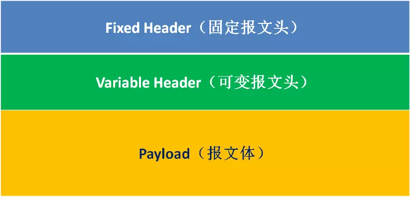
（1）固定头（Fixed header）。存在于所有MQTT数据包中，表示数据包类型及数据包的分组类标识。
（2）可变头（Variable header）。存在于部分MQTT数据包中，数据包类型决定了可变头是否存在及其具体内容。
（3）消息体（Payload）。存在于部分MQTT数据包中，表示客户端收到的具体内容。
固定头
固定头存在于所有MQTT数据包中，其结构如下： 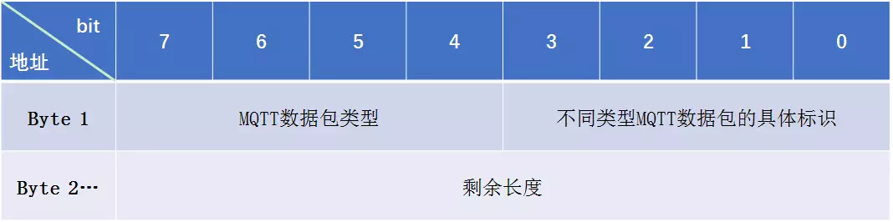
固定头中第一字节的7-4位表明数据包类型，MQTT协议规定了包括“连接请求”、“发布确认”、“订阅确认”等15种不同类型的数据包。第一字节剩余的4个比特位为数据包的标识位，分别标识了以下三种信息：
-
（1）DUP (1 bit)：发布消息的副本。用来在保证消息的可靠传输，如果设置为1，则在下面的变长中增加MessageId，并且需要回复确认，以保证消息传输完成，但不能用于检测消息重复发送。
-
（2）QoS (2 bits)：发布消息的服务质量，即：保证消息传递的次数
内容 QoS 含义 00 QoS 0 最多一次，即：<=1 01 QoS 1 至少一次，即：>=1 10 QoS 2 恰好一次，即：=1 11 - 预留 -
（3）RETAIN (1 bit)：发布保留标识，表示服务器要保留这次推送的信息，如果有新的订阅者出现，就把这消息推送给它，如果设有那么推送至当前订阅者后释放。
固定头的第二字节用来保存变长头部和消息体的总大小的，但不是直接保存的。这一字节是可以扩展，其保存机制：前7位用于保存长度，后一部用做标识。当最后一位为1时，表示长度不足，需要使用二个字节继续保存。
可变头
MQTT数据包中包含一个可变头，它驻位于固定的头和负载之间。可变头的内容因数据包类型而不同，较常的应用是作为包的标识。
Payload消息体
Payload消息体位MQTT数据包的第三部分，包含CONNECT、SUBSCRIBE、SUBACK、UNSUBSCRIBE四种类型的消息：
- （1）CONNECT：消息体内容主要是：客户端的ClientID、订阅的Topic、Message以及用户名和密码。
- （2）SUBSCRIBE：消息体内容是一系列的要订阅的主题以及QoS。
- （3）SUBACK：消息体内容是服务器对于SUBSCRIBE所申请的主题及QoS进行确认和回复。
- （4）UNSUBSCRIBE：消息体内容是要订阅的主题。
MQTT通信流程¶
MQTT根据支持的服务质量(Quality of Service)不同，客户端与服务器之间的通信流程也不同。MQTT支持三种QoS，分别是0、1、2。级别越高，交互越复杂，越能保证正确性和到达率，但是开销也更大。
QoS 0 是MQTT所有支持的服务质量中最基本、也是最简单的一种，它提供一种尽力而为的服务，即消息发送者确保有数据产生时向服务器发送消息，但是遇到意外导致传输失败时并不会重传。

QoS 1 在 Qos 0 的基础上增加了消息确认和重传机制，因此可以保证发布者发布的数据可以被服务器推送至少一次。在这种模式下，如果存在网络延时、确认包丢失等不确定因素，当然可能造成消息的重复推送。
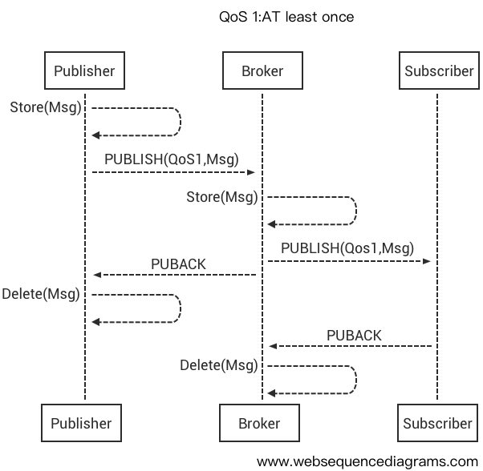
QoS 2 可以保证发布饿着的数据包被所有订阅者恰好接收一次。保证这种语义肯定会减少并发或者增加延时，因此只适合用于不能接受丢包或者重复消息的应用场景。
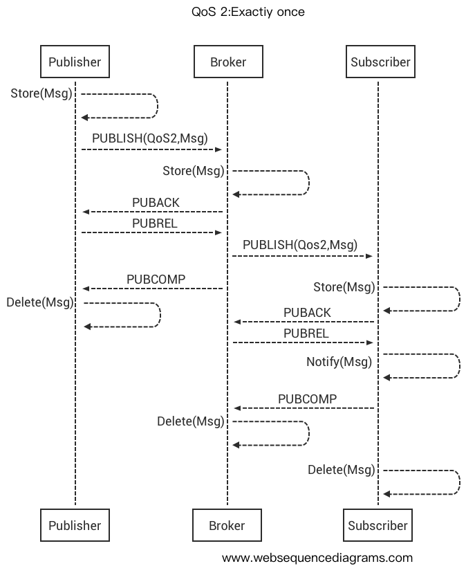
Ref: https://emqx-enterprise-docs-en.readthedocs.io/en/latest/mqtt.html
为什么选择MQTT¶
MQTT 以其简单、轻量、灵活的特点，受到了 IoT 开发人员的青睐，在实际 IoT 系统中得到了广泛应用。轻量级的 MQTT 协议可在严重受限的设备硬件和高延迟/带宽有限的网络上实现，它的灵活性使得为 IoT 设备和服务的多样化应用场景提供支持成为可能。
为了了解为什么 MQTT 如此适合 IoT 开发场景，我们首先来分析一下为什么其他流行网络协议未在 IoT 中得到成功应用。
HTTP¶
在互联网时代，大多数开发人员已经熟悉 HTTP Web 服务。那么为什么不让 IoT 设备连接到 Web 服务？设备可采用 HTTP 请求的形式发送其数据，并采用 HTTP 响应的形式从系统接收更新，但这种请求和响应模式存在一些严重的局限性：
- （1）HTTP 是一种同步协议，客户端需要等待服务器响应。在 IoT 领域，设备的能耗、数量以及网络低可靠、高延迟的特点都使得上述同步通信成为问题。异步消息协议更适合 IoT 应用程序。传感器发送读数，让网络确定将其传送到目标设备和服务的最佳路线和时间。
- （2）HTTP 是单向的，客户端必须发起连接才能获取数据。在 IoT 应用程序中，设备或传感器通常是客户端，这意味着它们无法被动地接收来自网络的命令。
- （3）HTTP 是一种 1-1 协议。客户端发出请求，服务器进行响应。将消息传送到网络上的所有设备上，不但很困难，而且成本很高，而这是 IoT 应用程序中的一种常见使用情况。
- （4）HTTP 是一种有许多标头和规则的重量级协议。这意味着除了内容负载外，由协议规定的包头、传输规则等会带来许多额外负载，因此不适合于受限的网络。
出于上述原因，不仅仅在物联网场景中，实际上大部分高性能、可扩展的系统也都使用异步消息总线来进行内部数据交换，而不使用 Web 服务。
Ref: https://www.ibm.com/developerworks/cn/iot/iot-mqtt-why-good-for-iot/index.html?_blank
XMPP¶
可扩展消息与存在协议 (Extensible Messaging and Presence Protocol, XMPP) 是一种以XML为基础的开放式即时通信协议。作为一种对等即时消息 (IM) 协议，XMPP高度依赖于支持 IM 用例的特性，比如存在状态和介质连接。与 MQTT 相比，它在设备和网络上需要的资源都要多得多。
XMPP网络是基于服务器的（即客户端之间彼此不直接交谈），所有通过XMPP通信的用户都需要预先绑定一个服务器。Jabber识别符（JID）是用户登录时所使用的账号，看起来通常像一个电子邮件地址，如someone@example.com：前半部分为用户名，后半部分为XMPP服务器域名，两个字段以@符号区隔。
举个例子，假设朱丽叶（juliet@capulet.com）想和罗密欧（romeo@montague.net）通话，他们两人的账号分别在Capulet.com及Montague.net的服务器上。当朱丽叶输入消息并按下发送钮之后，一连串的事件就发生了：
- 朱丽叶的XMPP客户端将她的消息发送到Capulet.com XMPP服务器。
- Capulet.com XMPP服务器打开与Montague.net XMPP服务器的连接。
- Montague.net XMPP服务器将消息寄送给罗密欧。如果他当前不在在线，那么存储消息以待稍后寄送。
XMPP协议允许通信的双方来自不同的服务器供应商，而他们彼此传讯时，不须拥有对方服务器的账号，也不须成为对方业者的会员。但XMPP协议也存在问题，首要的就是==数据负载太重==，随着通常超过70％的XMPP协议的服务器的数据流量的存在和近60％的被重复转发。其次是==二进制数据传输受限==，XMPP传输单一的XML文件，因此要透过XMPP传输二进制数据，需先将二进制数据以Base64编码。
MQTT以其体量轻、灵活性高、消息模式为发布/订阅等特点，解决上述协议应用在 IoT 场景中所遇到的问题。并且 MQTT 对传输内容的格式不做额外要求，因此用户可以根据自己的应用需求设计或更改 MQTT payload的数据格式。
MQTT服务器搭建¶
MQTT 服务器，即 MQTT broker，负责接收用户发送的应用数据，向订阅者转发消息，并将汇聚数据将其存储到云端数据库中。
我们使用 mosquitto 搭建MQTT服务器，mosquitto 是由 Eclipse 开发的一款开源 MQTT broker，它可以提供轻量级的消息推送/订阅服务。mosquitto提供了丰富的API，开发者可以很方便地在 mosquitto 代码的基础上进行个性化定制。
编译安装¶
下载mosquitto源码，解压后编译安装。(以下流程在Ubuntu 19.04测试通过)
1 2 3 4 | tar zxvf mosquitto-1.6.7.tar.gz
cd mosquitto-1.6.7
make
sudo make install
|
安装过程中可能出现的问题
(1) 编译找不到openssl/ssl.h
1 2 | sudo apt-get install openssl sudo apt-get install libssl-dev |
(2) 编译过程找不到ares.h
1 | sudo apt-get install libc-ares-dev |
(3) 编译过程找不到uuid/uuid.h
1 | sudo apt-get install uuid-dev |
(4) make: g++：命令未找到
1 2 | # 安装g++编译器
sudo apt-get install g++
|
完成安装后，在命令行验证其功能：
打开三个终端，分别作为服务器、订阅者和发布者。
- 一号终端作为服务器，执行
mosquitto，可以看到输出如下：
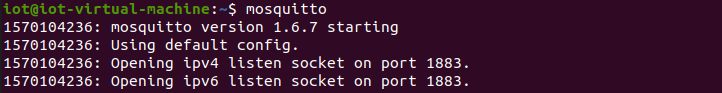
默认情况下，mosquitto 服务器监听1883端口。
- 二号终端作为订阅者，执行
mosquitto_sub -t "my_topic"，表示订阅主题"my_topic"，当有发布者发布该主题的内容时，服务器会将内容推送至二号终端并显示（二号终端在刚启动时无输出）：
在二号终端启动后，一号终端（服务器）会相应的输出，提示来自订阅者的连接
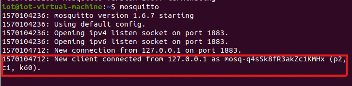
- 三号终端作为发布者，执行
mosquitto_pub -t "my_topic" -m "Test Message"，表示发布主题为"my_topic"、内容为"Test Message"的信息。默认配置下，发布者使用QoS0模式，因此完成数据发送后即结束进程。
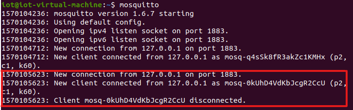
上图为一号终端（服务器）的输出，可以看到发布者“连接-传输-断开连接”的过程。
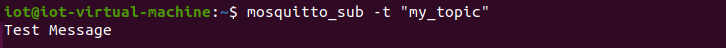
上图为二号终端输出，可以看到发布者发布的内容已经通过服务器推送至二号终端（订阅者）。
运行过程中可能出现的问题
(1) 使用过程中找不到libmosquitto.so.1：error while loading shared libraries: libmosquitto.so.1: cannot open shared object file: No such file or directory
解决方法：修改libmosquitto.so位置
1 2 3 4 | # 创建链接 sudo ln -s /usr/local/lib/libmosquitto.so.1 /usr/lib/libmosquitto.so.1 # 更新动态链接库 sudo ldconfig |
增加用户认证功能¶
初始状态的 mosquitto 不支持用户认证，即任意设备都可以向服务器订阅或发布消息。出于数据安全性考虑，我们需要在现有 mosquitto 的基础上增加用户认证功能，使只有通过合法认证的用户才可以订阅或发布消息。
我们使用 GitHub 上的一个开源 Mosquitto 认证插件。首先下载Mosquitto认证插件，解压后配置：
1 2 3 4 | tar zxvf mosquitto-auth-plug-0.1.3.tar.gz cd mosquitto-auth-plug-0.1.3/ # 基于初始配置文件进行配置 cp config.mk.in config.mk |
在config.mk中，除了BACKEND_MYSQL这一行是yes，其余行都是no。MOSQUITTO_SRC一行输入mosquitto的源码路径，即安装步骤中 mosquitto 的解压路径（例如MOSQUITTO_SRC = /home/iot//Document/mosquitto-1.6.7）。在OPENSSLDIR一行输入openssl的路径，可用openssl version -a查看openssl路径（例如OPENSSLDIR = /usr/lib/ssl）。
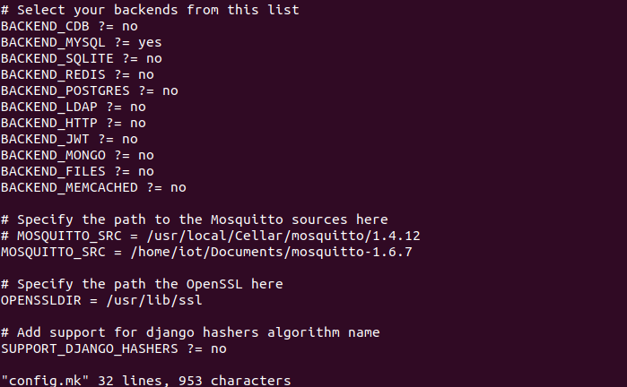
编译 mosquitto-auth-plug，将编译生成的动态库 auth-plug.so 移动到 mosquitto 的安装目录（/etc/mosquitto/）中：
1 2 3 | cd mosquitto-auth-plug-0.1.3/
make
sudo cp auth-plug.so /etc/mosquitto/
|
安装过程中可能出现的问题
(1) mysql未安装 mysql.h: No such file or directory #include <mysql.h>
1 2 3 4 | # 安装mysql
sudo apt-get install mysql-server
sudo apt install mysql-client
sudo apt install libmysqlclient-dev
|
(2) 函数参数类型冲突error: conflicting types for 'mosquitto_auth_psk_key_get'
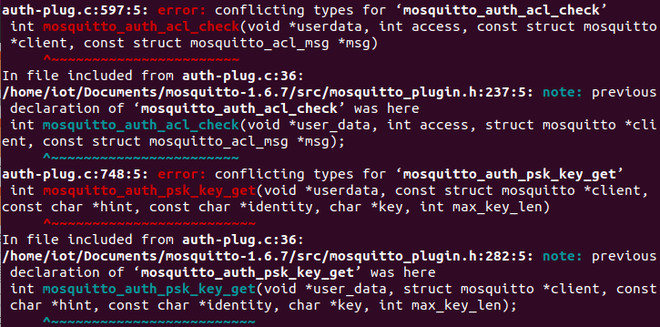
错误原因：函数声明中参数struct mosquitto *client前有const，但在函数实现中没有const，较低版本的g++会在编译时报错。
解决方案：提高g++版本，或直接修改源码，在函数实现中加上const。
配置 mosquitto ，使用户认证插件生效。可以在mosquitto插件目录中配置文件的基础上直接修改，然后将配置文件复制到mosquitto的配置目录（/etc/mosquitto/）中：
1 2 | cd mosquitto-auth-plug-0.1.3/
sudo cp examples/mosquitto-mysql.conf /etc/mosquitto/mosquitto.conf
|
修改/etc/mosquitto/mosquitto.conf，具体修改配置如下：
1 2 3 4 5 6 7 8 9 10 11 | auth_plugin /etc/mosquitto/auth-plug.so # 认证插件动态库位置 auth_opt_backends mysql # 插件支持的服务 #auth_opt_cdbname pwdb.cdb auth_opt_host localhost # 数据库IP auth_opt_port 3306 # 数据库端口 auth_opt_dbname mqtt_user # 数据库名称 auth_opt_user root # 数据库用户名 auth_opt_pass 12345 # 数据库密码 auth_opt_userquery SELECT pw FROM users WHERE username = '%s' # 用户认证查询语句 auth_opt_superquery SELECT IFNULL(COUNT(*), 0) FROM users WHERE username = ' %s' AND super = 1 # 超级用户查询语句 auth_opt_aclquery SELECT topic FROM acls WHERE username = '%s' # 话题查询语句 |
所有的用户信息都将以表的形式存储在MySQL数据库中。在mysql中创建名为mqtt_user的数据库，并将mysql.sql导入：
1 | mysql -P 3306 -u root -p mqtt_user<~/mysql.sql
|
导入后可以看到数据库中有以下表：
1 2 3 4 5 6 7 8 9 | mysql> show tables; +---------------------+ | Tables_in_mqtt_user | +---------------------+ | acls | | recorddata | | users | +---------------------+ 3 rows in set (0.00 sec) |
在mysql.sql中，我们向users表插入了一条用户名为iot，密码为12345的数据：
1 2 3 4 5 6 7 | mysql> select * from users; +----+----------+---------------------------------------------------------------------+-------+ | id | username | pw | super | +----+----------+---------------------------------------------------------------------+-------+ | 1 | iot | PBKDF2$sha256$901$3sa15aTb0ikHlLDy$7lthK1OnUyWL5oFXHMoFNEocp6oqyT+p | 0 | +----+----------+---------------------------------------------------------------------+-------+ 1 row in set (0.00 sec) |